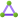
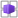

Microsoft Azure
From the internet
04
 DNS & Private LinkResolve the name · private endpoints
05
DNS & Private LinkResolve the name · private endpoints
05
 Load balancingFront Door · App Gateway · Load Balancer
From your datacentre
07
Load balancingFront Door · App Gateway · Load Balancer
From your datacentre
07
Users, worldwidePublic internet
On-premises & branchesOffices, remote users

VPN Gateway & ExpressRouteEncrypt the internet, or bypass it
Always sitting in front
Public IP addresses
NAT Gateway
DDoS platform protection · always on
08
Azure Virtual WANOr a hub you run yourself
The hub
06
WAF & Azure FirewallInspect it · and the routes to it
03
VNet peering & BastionPrivate reach · no public IPs
Every flow above crosses this hub — internet, on-premises and spoke-to-spoke.
Shared services in the hub
 GatewaySubnet
AzureFirewallSubnet
Private DNS zones
GatewaySubnet
AzureFirewallSubnet
Private DNS zones
 Log Analytics
Log Analytics
AzureBastionSubnet
Route tables
RouteServerSubnet
 DNS Private Resolver
DNS Private Resolver
01
 Virtual NetworkVNet · subnets · NICs
The spokes — where the workload lives
02
Virtual NetworkVNet · subnets · NICs
The spokes — where the workload lives
02
 NSG & ASGFilter by name, not by IP address
NSG & ASGFilter by name, not by IP address
Each tier sits in its own subnet — the NSG guards the subnet, the ASG names the workload.
The rule it produces
Allow 1433 · TCP · from AsgApp to AsgDb
No IP addresses. Add a subnet, nothing changes.
The solution the network exists for
snet-agw
 App Gateway · its own subnet
App Gateway · its own subnet
snet-web
 App Service
App Service

Container Apps
snet-app
 Virtual machines
Virtual machines
 AKS
AKS
snet-data
 Private endpoint
Private endpoint
 Azure SQL
Azure SQL
 Cosmos DB
Cosmos DB
 Key Vault
Key Vault
 Storage
Storage
Across all of it
09
Network monitoringNetwork Watcher for now, Azure Monitor for always
10
Naming conventionNames that tell you what a resource is
Build
Secure
Connect
Operate